International Workshop on Digital Twin and AIEmpowered Emergency Risk Management
7-8 Aug 2026, Hong Kong
Keynote & Plenary Speakers
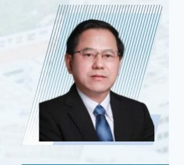
Generative Digital Base for Infrastructure and its Applications
Hehua Zhu
Academician of the Chinese Academy of Engineering Distinguished Professor of Tongji University, China
Hehua Zhu is now Distinguished Professor in Geotechnical Engineering at Tongji University and the Academician of the Chinese Academy of Engineering, and Director of State Key Laboratory of Disaster Reduction in Civil Engineering. He received his Bachelor's and Master's Degrees in Mining Engineering from Chongqing University in 1983 and 1986, respectively, and his PhD was awarded in Structural Engineering (Civil Engineering) at Tongji University in 1989. He did his post-doctoral research at the Geo-Research Institute of Osaka and Kyoto University, Japan, from 1993 to 1995. He proposed a generalized 3D Hoek-Brown rock strength criterion together with Prof. Lianyang Zhang, which was also called generalized Zhang-Zhu rock strength criterion (GZZ) recommended as ISRM standard. He was awarded the Humboldt Research Prize in 2015 and the T.H.H. medal at ICCES'13 in 2013. He created an international journal named Underground Space.
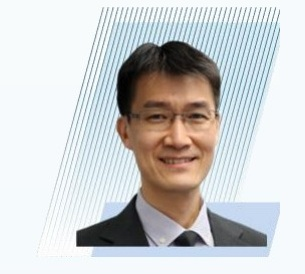
Transforming Landslide Emergency Lifecycle Management with Smart Geotechnology
Lawrence Shum
Geotechnical Engineering Office Civil Engineering and Development Department, Hong Kong, China
Ir Lawrence Shum is currently the Deputy Head of the Geotechnical Engineering Office, Civil Engineering and Development Department of the HKSAR Government. He has been practicing in the field of civil and geotechnical engineering for over twenty-five years. His professional experience covers various aspects, including slope safety management, landslide risk mitigation, site formation, deep excavation and cavern engineering. He has been involved in slope safety public communication for improving crisis preparedness and community resilience. In recent years, he has been exercising geotechnical control for public and private developments in the city and leading the innovation and technological advancement of the GEO.
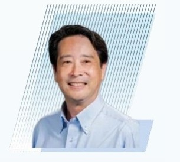
Data Driven Disaster Preparedness - The Role of Monitoring and Digital Twinning
Kenichi Soga
Fellow of the Royal Academy of Engineering, UK Member of the National Academy of Engineering, USA Member of the Engineering Academy, Japan University of California, Berkeley, USA
Dr. Kenichi Soga is the Donald H. McLaughlin Chair and a Distinguished Professor of Civil and Environmental Engineering at UC Berkeley. He is also the Director of the Berkeley Center for Smart Infrastructure and a faculty scientist at Lawrence Berkeley National Laboratory. His research focuses on infrastructure sensing, performance-based design and maintenance of infrastructure, energy geotechnics, and geomechanics from micro to macro. He has published more than 500 journal and conference papers and is a co-author of "Fundamentals of Soil Behavior". He is a member of the National Academy of Engineering, a fellow of the UK Royal Academy of Engineering, the Institution of Civil Engineers (ICE), the American Society of Civil Engineers (ASCE), and the Engineering Academy of Japan.
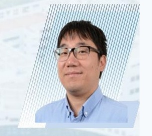
Modelling Complex Landside Dynamics: Integrating Physics-Based and Data-Driven Approaches
Zhongqiang Liu
Principal Researcher Norwegian Geotechnical Institute, Norway
Dr. Zhongqiang Liu is Principal Researcher at Norwegian Geotechnical Institute (NGI) and Adjunct Professor at Oslo Metropolitan University (OsloMet), Oslo, Norway, with expertise in risk and hazard assessment for geohazards, machine learning in geotechnics. He is Founding Chair of Technical Committee 309 of ISSMGE: Machine Learning and Big Data in Geotechnics. He is Chair of "Geotechnical Safety Network (GEOSNet)". Dr. Liu is Technical Lead of Research Group - Georisk at NGI. Dr. Liu is PI/co-PI of several HEU and RCN projects. His research has earned several international recognitions, including Best Paper Award of Journal Georisk in 2015, OTC ASCE Best Paper Award in 2019, GEOSNet Young Researcher Award in 2019, Best Paper Award of JZUSA in 2023, Best Paper Award of Engineering Geology in 2025.
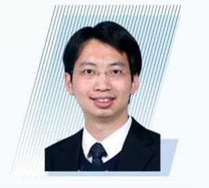
AI-Empowered Digital Twin for Resilient Smart Cities, Infrastructure and Buildings
Jack Chin Pang Cheng
Associate Head and Professor The Hong Kong University of Science and Technology, Hong Kong, China
Prof. Jack Cheng is a Professor and Associate Head in the Department of Civil and Environmental Engineering, Associate Director of GREAT Smart Cities Institute, Director of Center for Digital Twin on the Built Environment, Director of BIM Lab, and a Member of Low Altitude Economy Research Center at HKUST. His research interests include BIM, digital twin, artificial intelligence, construction robotics, blockchain, construction and facility management, smart and low-carbon buildings, and construction digitalization. He has led several R&D projects in smart buildings and construction. He is an author of over 400 international journal and conference publications, with over 20,000 citations. Prof. Cheng is also currently the Chairperson of Task Force on Digitalisation, BIM and AI at Hong Kong Construction Industry Council (CIC), a CIC Council Member, Chairperson of CITF BIM Vetting Subcommittee, Director of the BEAM Society Limited, and Editorial Board Member of several international journals.
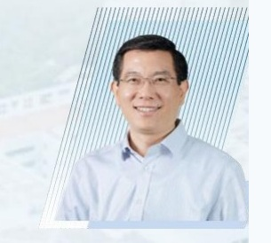
Satellite Image Fusion for Landslide Monitoring
Bo Huang
Chair Professor, Department of Geography & Deputy Director The University of Hong Kong, Hong Kong, China
Dr. Bo Huang is Chair Professor in the Department of Geography and Deputy Director of the Institute of Urban Systems at the University of Hong Kong. His research focuses on spatiotemporal data analytics, unified satellite image fusion, and spatial optimization, with applications in environmental monitoring, disaster management, transportation, and urban planning. He has published more than 300 papers in SCI/SSCI-indexed journals, including Nature Human Behaviour and Nature Communications. He is an Associate Editor of the International Journal of Geographical Information Science and previously served as Editor-in-Chief of Elsevier's Comprehensive Geographical Information Systems. He has received several prestigious awards, including the RGC Senior Research Fellowship, the CPGIS Innovation Award, the Second Prize of the Ministry of Education Natural Science Award, a Gold Medal at the Geneva International Exhibition of Inventions, and the Ministry of Education Changjiang Scholar Chair Professorship.
Key Technologies for Dam Breaching Flood Forecasting and Risk Management
Fang Yang
Secretary of the Party Committee and Deputy President Pearl River Water Resources Research Institute, China
Professor Fang Yang is a Senior Engineer (Level 2) and PhD Supervisor at the Pearl River Water Resources Research Institute. She serves as Director of the MOE Key Laboratory for Water Security Guarantee in the Guangdong-Hong Kong-Macao Greater Bay Area and holds key academic positions in multiple national water conservancy and ocean engineering societies, as well as associate editor of the journal Pearl River. Her research focuses on Pearl River estuary regulation and protection, water environment and ecological restoration, and flood and tidal disaster prevention. She has presided over and participated in more than 100 national and provincial research projects and received nine provincial and ministerial scientific and technological awards, along with prestigious provincial labor and youth science and technology honors.
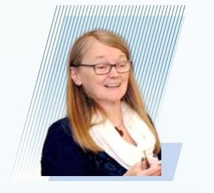
Urban Resilience with Risk-Informed OM and Data-Driven EWS
Suzanne Lacasse
Fellow of the US, Canadian, French and Norwegian National Academies of Engineering Fellow of the Canadian and Norwegian Academies of Science Norwegian Geotechnical Institute, Norway
Dr. Suzanne Lacasse did a Bachelor of Arts at University of Montreal and her civil engineering degrees at Ecole Polytechnique of Montreal and MIT. After 12 years on MIT's Faculty, she joined NGI where she was Managing Director between 1991 and 2012. She serves on GEO's Soil Safety Technical Review Board in Hong Kong. She published over 400 papers and gave the Rankine, Terzaghi and Lumb Lectures. ISSMGE established the 'Suzanne Lacasse Lecture' on Risk and Reliability in Geotechnical Engineering. Dr. Lacasse received five PhDs Honoris Causa. She is elected member of the national Academies of Engineers in the USA, Canada, Norway and France. She is Honorary Professor at Tongji and Zhejiang Universities, and Visiting Professor at Shanghai Jiaotong University.
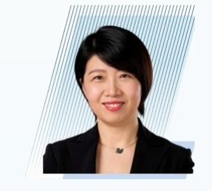
Knowledge-Enhanced LLM for Urban Waterlogging
Jinhui Li
Professor Harbin Institute of Technology (Shenzhen), China
Prof. Jinhui LI is a Professor at Harbin Institute of Technology (Shenzhen). Her research has long focused on disaster-cascade risk control and intelligent geotechnical engineering. She has led more than 30 research projects, including Key Programs of the National Natural Science Foundation of China. She has authored or co-authored more than 140 papers, over 90 of which are indexed in the Science Citation Index, and has published two English-language academic books. She holds a total of nine granted Chinese invention patents and registered software copyrights. Prof. LI has been named among the World's Top 2% Scientists and received the 18th China Youth Science and Technology Award. She led the team that received the First Prize of the Guangdong Provincial Natural Science Award, and was also honoured with the Young Scientist Award of the International Society for Geotechnical Safety (ISGS) and the AGS Geotechnical Award of the Association of Geotechnical and Geoenvironmental Specialists in Hong Kong, among other distinctions. She serves as Associate Editor of Journal of Ocean Engineering and Marine Energy and as an Editorial Board Member of Computers and Geotechnics and Georisk.
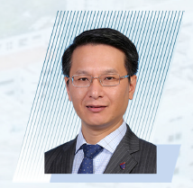
Seismic Landslide Analyses: from Physics-Based Simulation to Machine Learning
Gang Wang
Associate Head and Professor The Hong Kong University of Science and Technology, Hong Kong, China
Prof. Gang Wang is Professor and Associate Head of the Department of Civil and Environmental Engineering at the Hong Kong University of Science and Technology (HKUST). He received his BEng and MEng degrees from Tsinghua University and earned his PhD in Civil Engineering from the University of California, Berkeley. His research focuses on geotechnical earthquake engineering, soil dynamics, and computational geomechanics, covering topics such as physics-based earthquake simulation, soil liquefaction, and soil-structure interaction. Supported by competitive grants from the RGC and NSFC, Prof. Wang serves as President of the Hong Kong Society of Theoretical and Applied Mechanics, Past President of the ASCE Hong Kong Section, and Associate Editor for several international journals. His distinguished career is recognized through major honors, including the NSFC Outstanding Overseas Scholar Award, the HKUST School of Engineering Distinguished Teaching Award, and the Li Foundation Heritage Prize.
Towards Resilient Cities through Digital Coupled Human, nAture and INfrastructure Systems (CHAINS)
Qiuchen Lu
Professor University College London, UK
Prof. Qiuchen Lu is a Professor in Digital Built Asset Management at The Bartlett School of Sustainable Construction, University College London (UCL), and a globally recognized scholar in digital innovation for the built environment. Her research focuses on the integration of digital twins, artificial intelligence, and informatics to support the development of smart, sustainable, and resilient (3S) city systems in the context of climate change. Prof. Lu has secured many fundings as PI/Co-PI, funded by the Engineering and Physical Sciences Research Council (EPSRC), Royal Academy of Engineering (RAEng), British Standards Institution (BSI) etc. She was awarded the Royal Academy of Engineering (RAEng)/Leverhulme Trust Research Fellowship in 2024/2025. Within the domain of digital built environment, she has authored more than 75 peer-reviewed publications and four books, including the Digital Twins in the Built Environment: Fundamentals, principles and applications (ICE Publishing). Her methodological and theoretical contributions - particularly the Five-layer Multi-scale Digital Twin Theory (FMDTT) - are widely adopted in industry and academia across multiple scales, from buildings and hospitals to road networks and port infrastructure.
Transforming Regional Landslide Risk Control Using Modern AI Techniques
Te Xiao
Associate Professor Shanghai Jiao Tong University, China
Dr. Te Xiao is an Associate Professor at Shanghai Jiao Tong University and a recipient of the National Youth Talent Program of China. His research focuses on geotechnical disaster risk prevention and control, machine learning, and digital twin technology. He has earned a series of prestigious domestic and international academic honors, including the ISSMGE Bright Spark Lecture Award, the Geotechnique Young Researcher Award, and the Georisk Best Paper Award. He serves as a committee member of the ASCE Embankment and Slope Committee and a corresponding member of multiple core technical committees under ISSMGE, engaging in cutting-edge academic research and international academic exchanges in geotechnical engineering.
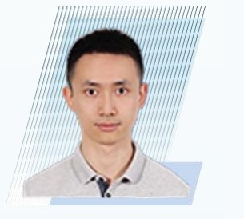
Traffic Image-Based Quantitative Waterlogging Depth Measurement for Flood Detection and Rapid Prediction
Ping Shen
Assistant Professor University of Macau, Macao, China
Dr. Shen is currently an Assistant Professor at the State Key Laboratory of Internet of Things for Smart City (SKL-IOTSC) at University of Macau. He obtained the PhD degree (2019) from Department of Civil and Environmental Engineering, Hong Kong University of Science and Technology (HKUST). His research areas are physical mechanisms and practical solutions in disasters affecting human activity, mainly including landslide, debris flow, flooding, etc. His research has received 5 PI fundings from NSFC and FDCT and the outcomes have been published by more than 50 journal papers.
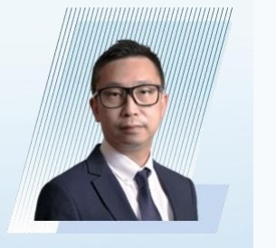
Beyond Monitoring: Predictive Engineering Through Digital Twins and AI
Ryan Yan
Technical Director AECOM Asia Company Limited, Hong Kong, China
Ir Dr. Ryan Yan is currently an Executive Director at AECOM Asia Company Limited. He has over 29 years of experience in civil engineering including teaching, research and engineering practice in Hong Kong and overseas covering a wide spectrum of subject fields. Ryan specializes in numerical modelling of soil-structure interaction problems, characterization of materials via field and laboratory testing, slope engineering, sustainable geotechnics, and application of novel digital solutions to the project life cycle. He is a Chartered Member of the Hong Kong Institution of Engineers and Engineering New Zealand, a Registered Professional Engineer in Hong Kong, a CIC-Certified BIM Manager, and an Accredited NEC4 ECC Project Manager. Ryan has published more than 80 technical articles in peer-reviewed international journals and conference proceedings and is the recipient of several national and international awards. He also serves as an Adjunct Professor of the Hong Kong University of Science and Technology and the Hong Kong Polytechnic University.
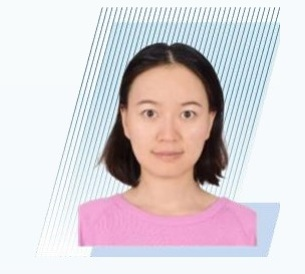
Numerical Simulation and Dynamic Visualization of Urban Flooding Processes
Liang Gao
Associate Professor University of Macau, Macao, China
Dr. Liang Gao is currently an Associate Professor at the State Key Laboratory of Internet of Things for Smart City and the Department of Ocean Science and Technology, University of Macau. Her research focuses on multi-hazard risk simulation and mitigation for floods and landslides in coastal urban areas, encompassing multi-hazard triggering mechanisms, multi-scale coupled numerical modeling, and quantitative risk assessment methods for disaster chains. She has published over 80 papers in SCI journals (55 as first/corresponding author). As Principal Investigator, she has been awarded multiple research grants from funding agencies including the National Natural Science Foundation of China (NSFC), the Science and Technology Development Fund of Macau (FDCT), and the Shenzhen Science and Technology Innovation Commission. She serves on the editorial boards of several international journals, including Natural Hazards and Earth System Sciences (NHESS), Georisk, Underground Space, International Journal of Sediment Research, Geodata and AI, and the Chinese journal Geological Science and Technology Bulletin.
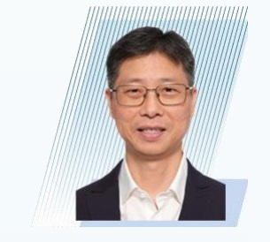
Probabilistic Hazard Analysis of Rainfall-Induced Landslides at a Specific Slope under Climate Change
Yu Wang
Professor The Hong Kong University of Science and Technology, Hong Kong, China
Dr. Yu Wang is a professor at the Hong Kong University of Science and Technology. His recent research efforts have focused on machine learning in geotechnical/geological engineering, digital twin of subsurface geo-structures, and geotechnical uncertainty, reliability and risk. His research earned several prestigious international awards, including the GEOSNet Award from the Geotechnical Safety Network (GEOSNet), the 2023 Thomas A. Middlebrooks Award from ASCE, and multiple Best Paper Awards from various international journals, e.g., Georisk, Computers and Geotechnics, Canadian Geotechnical Journal, ASCE-ASME Journal of Risk and Uncertainty in Engineering Systems, Part A: Civil Engineering, and the Highly Cited Research Award from the journal of Engineering Geology. Dr Wang has authored/co-authored over 230 journal papers and three books in English. He chairs ISSMGE's TC309 Machine Learning and serves in editorial boards of several top journals in geotechnical engineering or risk and uncertainty analysis (e.g., Associate Editor for the ASCE Journal of Geotechnical and Geoenvironmental Engineering).
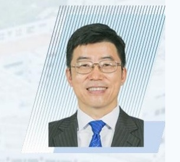
Digital Twin Empowered Landslide and Flood Risk Management
Limin Zhang
Fellow of the Hong Kong Academy of Engineering Chair Professor and Department Head The Hong Kong University of Science and Technology, Hong Kong, China
Dr. Limin Zhang is Chair Professor and Head of the Department of Civil and Environmental Engineering and Associate Director of State Key Lab of Climate Resilience for Coastal Cities at the Hong Kong University of Science and Technology. His research areas include slopes, dams, foundations, geotechnical risk assessment and management, as well as geoscience sensing. Dr. Zhang is Chair of International Society of Soil Mechanics and Geotechnical Engineering (ISSMGE)'s TC210 on Embankment Dams, Past Chair of ASCE Geo-Institute's Risk Assessment and Management Committee, Editor-in-Chief of Georisk, and Special Editor of Geodata and AI. He is the recipient of the Chinese National Engineer Award, National Award for Excellence in Innovation, ASCE Ralph Peck Award, ISSMGE's Lacasse Lecture Award, Wilson Tang Lecture Award, and Chinese Geotechnical Society's Huang Wenxi Lecture Award.